Країни учасниці
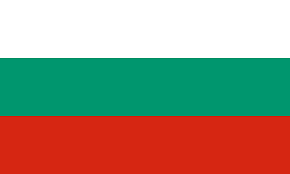
Болгарія
Dara "bangaranga"
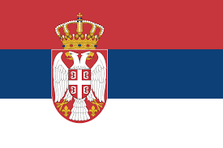
сербія
LAVINA "Kraj mene"

Франція
Monroe " Regarde"
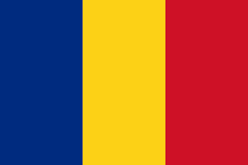
Румунія
Александра Капітанеску "choke me"
Польша
Аліція "Pray"

Чехія
Даніель Жижка"Crossroads"

Германія
Sarah Engels "fire"
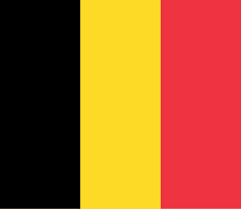
бельгія
ESSYLA"Dancing on the Ice"
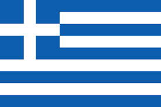
греція
Akylas "ferto"
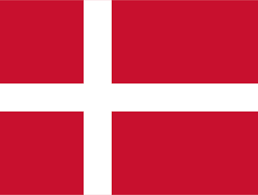
Данія
Søren Torpegaard Lund "Før vi går hjem"

Швейцарія
Вероніка Фузаро "Alice"

Швеція
Felicia "my system"
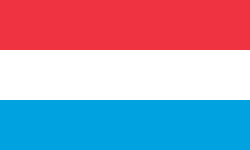
Люксембург
Eva Marija "Alice"

Литва
Lion Ceccah "Sólo quiero más"

Латвія
Atvara "Ēnā"

Норвегія
Jonas Lovv "Ya Ya Ya"

фінляндія
Linda Lampenius & Pete Parkkonen "Liekinheitin"
Естонія
Vanilla Ninja - Too Epic To Be True

Італія
Sal Da Vinci "Per sempre sì"
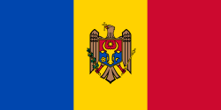
Молдова
satoshi "Viva, Moldova!"
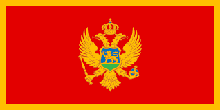
Чорногорія
тамара живковиш "Nova zora"

Албанія
Alis "Nân"
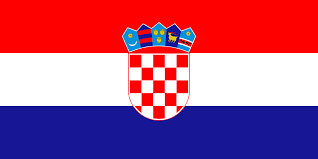
Хорватія
LELEK "Andromeda"
Україна
LELEKA "Rydnim"

Великабританія
Look Mum No Computer "Eins, Zwei, Drei"
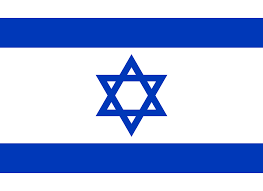
Ізраїль
Noam "Michelle"
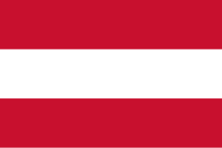
Австрія
COSMÓ "Tanzschein"

Австралія
Delta Goodrem "Eclipse"
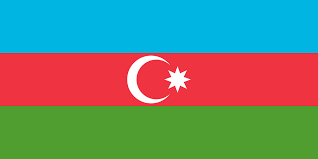
Азебарджан
JIVA "just go"
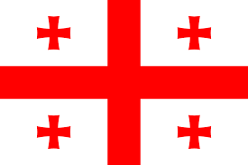
Грузія
Bzikebi "On Replay"
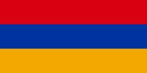
Арменія
lilit "Paloma Rumba"
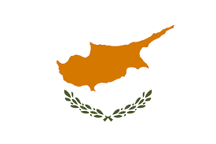
Кіпр
Antigoni "JALLLA"